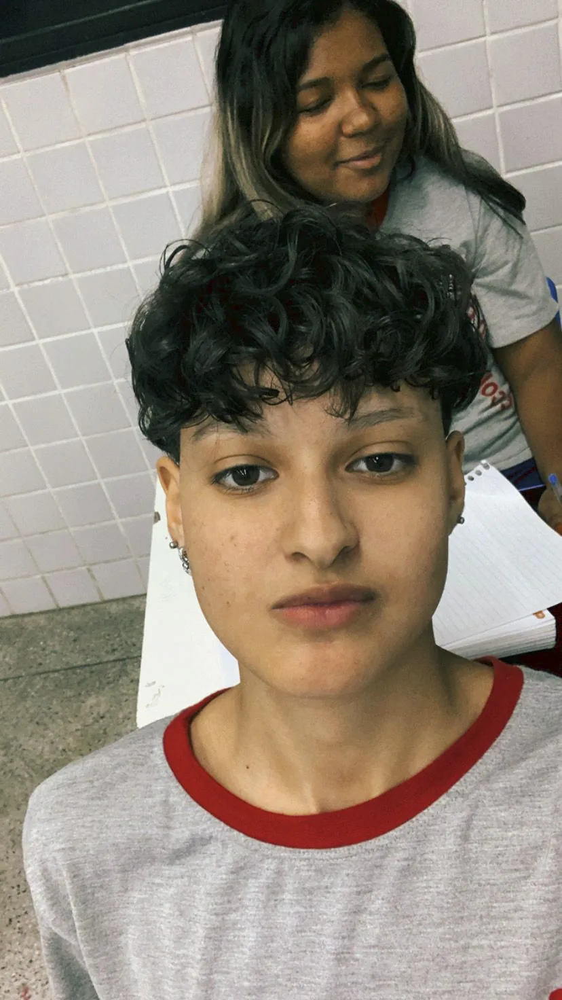

Esse sou eu
Turma 3º D — Informática
Theodor Fagundes
Técnico em Informática, desenvolvedor e lutador.
Sonho em crescer profissionalmente na área de tecnologia, busco graduações e conhecimento, quero conhecer o mundo, realizar meus sonhos e ter a liberdade de ser quem sou.
Matérias
Meu desempenho em cada matéria. Clique em um card para ver os detalhes.
Bimestre
Carregando matérias…
Códigos e vídeo
Espaço para exibir um vídeo em destaque e guardar trechos de códigos importantes que realizei durante o ano letivo.
Vídeo
Código
//comentário: código controller classificação projeto jes
const classificacaoService = require('../services/classificacaoService');
const asyncHandler = require('../utils/asyncHandler');
async function porModalidade(req, res) {
const { modalidadeId } = req.params;
const { genero } = req.query;
const classificacao = await classificacaoService.obterClassificacao(modalidadeId, genero || null);
return res.json(classificacao);
}
async function geral(req, res) {
const pontuacaoGeral = await classificacaoService.obterPontuacaoGeral();
return res.json(pontuacaoGeral);
}
module.exports = { porModalidade: asyncHandler(porModalidade), geral: asyncHandler(geral) };
Projetos
Principais projetos desenvolvidos pelos estudantes durante o ano letivo.
Carregando projetos…
Últimos detalhes
Reflexões e aprendizados construídos ao longo do ano letivo.
Carregando reflexões…